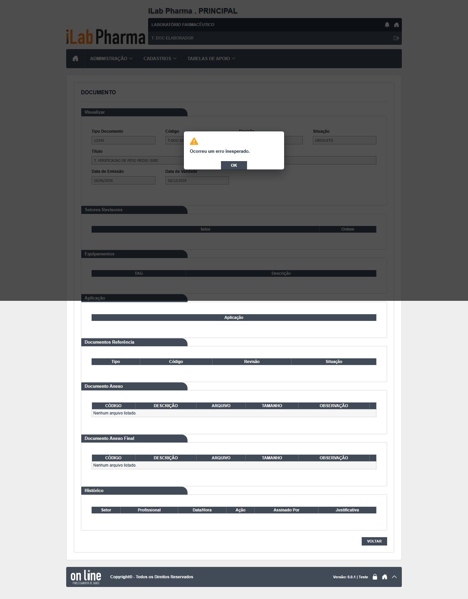
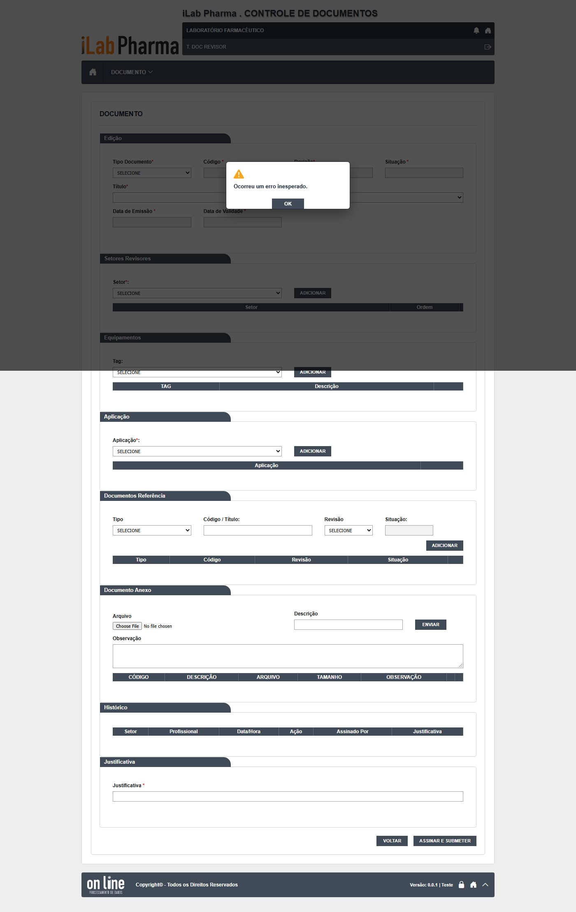

Menu: DOCUMENTO (o título da tela é "DOCUMENTO") · Situação do manual: Em ajuste · Fonte dos prints: versão nova.
Cuidados e falhas conhecidas
- DV-DOC-N-001 (Alta): só o administrador de teste monta e conduz o documento; os perfis de papel recebem 403 e a tela mostra "Ocorreu um erro inesperado.". Evidência:

A imagem mostra a tela Visualizar de um documento vigente aberta pelo elaborador, com a caixa "Ocorreu um erro inesperado." (as outras evidências do mesmo defeito são de gravação, sem imagem própria). - DV-DOC-N-002 (Alta): o histórico não grava criação, envio, devolução, vigência e exclusão. - DV-DOC-N-003 (Média): quando o servidor recusa a leitura, o Revisor vê o formulário de inclusão vazio com o botão "ASSINAR E SUBMETER" (risco de submeter um documento em branco).

A imagem mostra a edição de um documento aberta por um usuário só de revisão: a caixa "Ocorreu um erro inesperado." e, por trás, o formulário com "SELECIONE" e sem dados. - DV-DOC-N-005 (Baixa): o anexo baixado sai com nome aleatório, não o nome enviado. - DV-DOC-N-006 (Baixa): mensagem genérica no lugar de "Permissão Negada". - DV-DOC-N-007 (Média, ambiente/dados): nenhum tipo existente permite exercitar Nova Revisão e Substituído (a tela de Tipo ainda é provisória). - DV-DOC-N-004 (Média): vale para a tela Documento Legado, que não faz parte deste manual (Documento Anexo e Anexo Final mostram a mesma lista).
Diferenças em relação ao legado
| Ponto | Classe | O que mudou |
|---|---|---|
| Fim do envio | Melhoria | O legado terminava com "Ocorreu um erro inesperado." (mas mudava a situação); a versão nova termina com "Inclusão efetuada com sucesso." (CT-DOC-002; DV-DOC-001 corrigido em parte). |
| Histórico da criação e do envio | Igual (continua faltando) | DV-DOC-N-002. |
| Mensagens do formulário, anexo único, conferências do envio | Igual | Mesmas mensagens do legado (CT-DOC-001, N-01, N-08). |
| Exclusão em inclusão | Igual | Histórico fica vazio (DV-DOC-024). |
| Imprimir a lista | Melhoria | O legado dava erro de servidor (DV-DOC-015); a versão nova gera o PDF. |
| Elaborador sem acesso aos subrecursos | Novo (defeito) | DV-DOC-N-001 e N-003; no legado não existia. |
| Usuário sem função | Regressão (mensagem) | Mensagem genérica no lugar de "Permissão Negada" (DV-DOC-N-006). |
| Gravar sem função | Melhoria | O servidor agora recusa (403), o que o legado não fazia (DV-DOC-029, 030, 037, 039). |
Base do que vem só do legado: homologacao/6.controle_documento/menu-documento/paginas/01-documento/manual.md (do legado; a confirmar na versão nova).
Prints que faltam
| Passo ou estado | O que mostrar | Por quê |
|---|---|---|
| Lista com a coluna de ações de um documento em inclusão | Os ícones de editar e excluir | Hoje só há imagens de lista com documentos em outras situações |
| Caixa "Confirma a inclusão do documento?" | A pergunta antes de gravar | Descrita no resultado da rodada 1, sem imagem |
| Mensagens "Anexo pendente!", "Adicione, pelo menos, um Setor Revisor!" e "...uma Aplicação!" | A faixa de erro de cada uma | Só o texto está registrado (CT-DOC-001) |
| Segundo anexo recusado | A mensagem "Já existe um anexo adicionado..." | Só o texto está registrado |
| Caixa de confirmação e justificativa da exclusão | "Confirma a exclusão do documento?" e "Informe a justificativa" | Só a tela de exclusão tem imagem |
| Histórico do documento aberto | O quadro Histórico vazio depois do envio | Prova do DV-DOC-N-002 pela tela do elaborador |
| PDF da lista impresso | A primeira página do PDF | Sem captura (anotado no resultado) |
| Telas provisórias | Cartão "API conectada" de cada uma | Existem como A-tela-*.png da rodada 1, mas não entram neste manual |